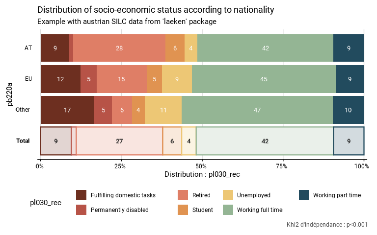

Function describe the distribution of a discrete variable in different groups. It can use complex survey data. It produces a table, a graphic and a statistical test.
Usage
distrib_group_discrete(
data,
group,
quali_var,
facet = NULL,
filter_exp = NULL,
...,
na.rm.group = T,
na.rm.facet = T,
na.rm.var = T,
prop_method = "beta",
show_value = TRUE,
show_lab = TRUE,
scale = 100,
digits = 0,
unit = "",
dec = ",",
pal = "Hokusai1",
direction = 1,
dodge = 0.9,
font = "Roboto",
wrap_width_y = 25,
wrap_width_leg = 25,
legend_ncol = 4,
title = NULL,
subtitle = NULL,
xlab = NULL,
ylab = NULL,
legend_lab = NULL,
caption = NULL,
export_path = NULL
)
distrib_group_d(...)Arguments
- data
A dataframe or an object from the survey package or an object from the srvyr package.
- group
A variable defining groups to be compared.
- quali_var
The discrete variable that is described in the different groups.
- facet
A variable defining the faceting group.
- filter_exp
An expression that filters the data, preserving the design.
- ...
All options possible in as_survey_design in srvyr package.
- na.rm.group
TRUE if you want to remove the NAs in quali_var, group and facet. FALSE if you want to create NA categories for quali_var, group and facet. Default is TRUE.
- na.rm.facet
TRUE if you want to remove observations with NA on the facet variable. FALSE if you want to create a facet with the NA value for the facet variable. Default is TRUE.
- na.rm.var
TRUE if you want to remove observations with NA on the discrete variable. FALSE if you want to create a modality with the NA value for the discrete variable. Default is TRUE.
- prop_method
Type of proportion method used to compute confidence intervals. See svyciprop in survey package for details. Default is the beta method.
- show_value
TRUE if you want to show the proportion in each category of each group on the graphic. FALSE if you do not want to show the proportions. Proportions of 2 percent or less are never showed on the graphic. Default is TRUE.
- show_lab
TRUE if you want to show axes, titles, caption and legend labels. FALSE if you do not want to show any label on axes, titles, caption and legend. Default is TRUE.
- scale
Denominator of the proportion. Default is 100 to interprets numbers as percentages.
- digits
Numbers of digits showed on the values labels on the graphic. Default is 0.
- unit
Unit showed in the graphic. Default is no unit.
- dec
Decimal mark shown on the graphic. Default is ",".
- pal
Color palette used on the graphic. The palettes from the packages MetBrewer, MoMAColors and PrettyCols are available.
- direction
Direction of the palette color. Default is 1. The opposite direction is -1.
- dodge
Width of the bar, between 0 and 1. Default is 0.9.
- font
Font used in the graphic. Available fonts, included in the package itself, are "Roboto", "Montserrat" and "Gotham Narrow". Default is "Roboto".
- wrap_width_y
Number of characters before going to the line for the labels of the groups. Default is 25.
- wrap_width_leg
Number of characters before going to the line for the labels of the categories of quali_var. Default is 25.
- legend_ncol
Number of colomns in the legend. Default is 4.
- title
Title of the graphic.
- subtitle
Subtitle of the graphic.
- xlab
X label on the graphic. As coord_flip() is used in the graphic, xlab refers to the x label on the graphic, after the coord_flip(), and not to the x variable in the data. If xlab = NULL, the X label on the graphic wil be Distribution : " + quali_var. To show no X label, use xlab = "".
- ylab
Y label on the graphic. As coord_flip() is used in the graphic, ylab refers to the y label on the graphic, after the coord_flip(), and not to the y variable in the data. If ylab = NULL, Y label on the graphic will be group. To show no Y label, use ylab = "".
- legend_lab
Legend (fill) label on the graphic. If legend_lab = NULL, legend label on the graphic will be quali_var. To show no legend label, use legend_lab = "".
- caption
Caption of the graphic.
- export_path
Path to export the results in an xlsx file. The file includes three sheets : the table, the graphic and the statistical test.
Examples
# Loading of data
data(eusilc, package = "laeken")
# Recoding eusilc$pl030 into eusilc$pl030_rec
eusilc$pl030_rec <- NA
eusilc$pl030_rec[eusilc$pl030 == "1"] <- "Working full time"
eusilc$pl030_rec[eusilc$pl030 == "2"] <- "Working part time"
eusilc$pl030_rec[eusilc$pl030 == "3"] <- "Unemployed"
eusilc$pl030_rec[eusilc$pl030 == "4"] <- "Student"
eusilc$pl030_rec[eusilc$pl030 == "5"] <- "Retired"
eusilc$pl030_rec[eusilc$pl030 == "6"] <- "Permanently disabled"
eusilc$pl030_rec[eusilc$pl030 == "7"] <- "Fulfilling domestic tasks"
# Computation, taking sample design into account
eusilc_dist_d <- distrib_group_d(
eusilc,
group = pb220a,
quali_var = pl030_rec,
strata = db040,
ids = db030,
weight = rb050,
title = "Distribution of socio-economic status according to nationality",
subtitle = "Example with austrian SILC data from 'laeken' package"
)
#> Input: data.frame
#> Sampling design -> ids: db030, strata: db040, weights: rb050
eusilc_dist_d$graph
#> Warning: Removed 1 row containing missing values or values outside the scale range
#> (`geom_text()`).

eusilc_dist_d$tab
#> # A tibble: 21 × 9
#> pb220a pl030_rec prop prop_low prop_upp n_sample n_weighted n_weighted_low
#> <fct> <fct> <dbl> <dbl> <dbl> <int> <dbl> <dbl>
#> 1 AT Fulfillin… 0.0890 0.0840 0.0942 1036 548489. 516433.
#> 2 AT Permanent… 0.0119 0.00931 0.0150 125 73270. 56226.
#> 3 AT Retired 0.285 0.275 0.295 3055 1754654. 1694827.
#> 4 AT Student 0.0602 0.0558 0.0650 693 371222. 341944.
#> 5 AT Unemployed 0.0388 0.0351 0.0427 411 238841. 215788.
#> 6 AT Working f… 0.421 0.412 0.431 4689 2595137. 2526927.
#> 7 AT Working p… 0.0942 0.0889 0.0998 1064 580514. 546750.
#> 8 EU Fulfillin… 0.124 0.0886 0.167 38 20343. 13863.
#> 9 EU Permanent… 0.0498 0.0280 0.0810 15 8186. 4024.
#> 10 EU Retired 0.155 0.115 0.202 45 25429. 17953.
#> # ℹ 11 more rows
#> # ℹ 1 more variable: n_weighted_upp <dbl>